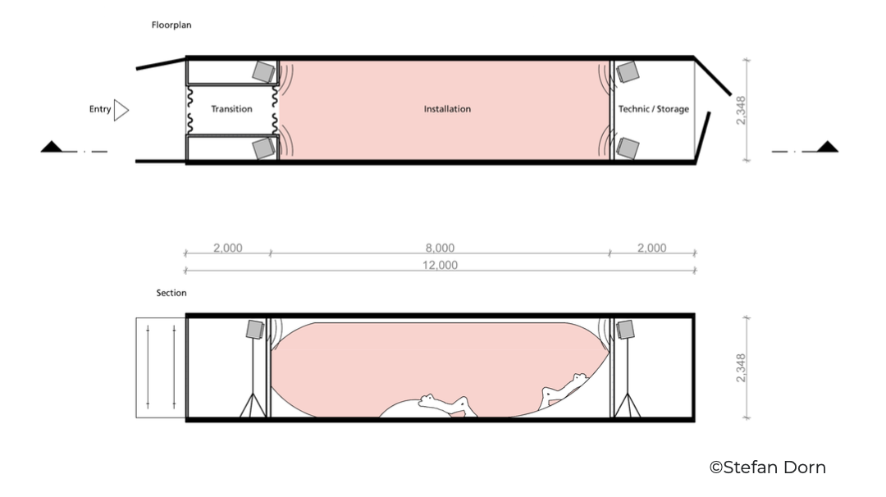

Returning to zero time
_an immersive biofeedback environment was installed inside a shipping container for the Reeperbahn Festival 2020, in Hamburg Germany. Taking the anatomic womb as inspiration, audio and visual impulses are tuned to the average heart rate of visitors as an investigation on the social experience of synchronisation during the first COVID lockdown. Commissioned for the artist collective Frank Nubala.
Contributions with artistic concept, sound design

working process including spatial design and production process